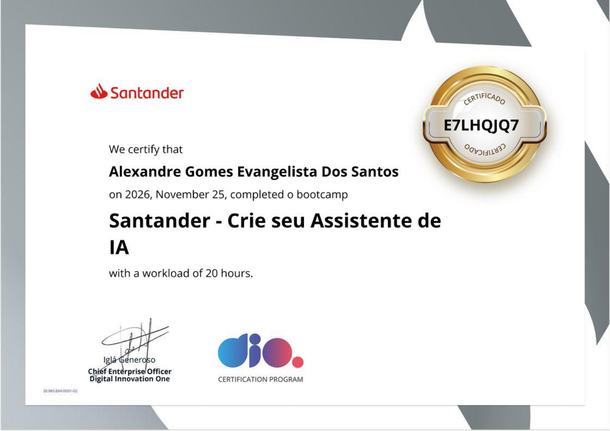

Backend Seguro &
Offensive Security
Olá, eu sou o Alexandre. Engenheiro de software backend, pentester e especialista em segurança digital. Desenvolvo arquiteturas de alta resiliência e realizo auditorias ofensivas para antecipar e neutralizar vulnerabilidades críticas.
Certificações & Validações Técnicas
Qualificações oficiais em segurança ofensiva e inteligência artificial aplicada. Clique em qualquer credencial para inspecionar o certificado e código de autenticidade.
Santander - Cibersegurança do Zero à prática
Formação intensiva cobrindo fundamentos de segurança da informação, arquitetura de redes seguras, prevenção de ataques cibernéticos e práticas de pentest.

Santander - Crie seu Assistente de IA
Bootcamp de engenharia e integração de modelos de IA, agentes inteligentes, orquestração de prompts e desenvolvimento de automações modernas.
Neo4j Graph Database & Cypher Fundamentals
Especialização em modelagem de grafos, consultas avançadas em Cypher, mapeamento de caminhos de intrusão no Active Directory (BloodHound) e análise de redes de ameaças.
// CAPACIDADES OFENSIVAS & DEFENSIVAS
Domínio Técnico de Ponta a Ponta
Engenharia de software com segurança nativa incorporada em cada camada.
Backend Engineering
Desenvolvimento de APIs robustas, microsserviços escaláveis e bancos de dados modelados para máxima integridade e proteção de dados.
Pentest & AppSec
Simulação de ataques reais contra aplicações web, infraestruturas de rede e APIs. Provas de Conceito (PoCs) e mitigação antes do deploy.
Investigação Digital & OSINT
Inteligência de fontes abertas (OSINT), análise forense de artefatos digitais, correlação de logs de incidentes e threat hunting preventivo.
// PROJETOS EM PRODUÇÃO
Showcase Técnico no GitHub
Secure API Gateway & Auth Guard
Serviço de gateway com mitigação automática contra Brute Force, rate limiting distribuído com Redis, assinatura digital JWT com rotação de chaves e sanitização estrita.
Automated Recon & Vuln Scanner
Ferramenta CLI para reconhecimento automatizado de superfícies de ataque: enumeração de subdomínios, checagem de portas ativas e verificação de cabeçalhos de segurança ausentes.
OSINT & Cyber Threat Graph Framework
Plataforma em Python integrada ao Neo4j para mapeamento de grafos de ataque: correlação em nós e arestas de infraestruturas C2, IPs maliciosos, vazamentos e análise de rotas de privilégio no Active Directory (BloodHound).
// CONSOLE INTERATIVO
Execute Comandos Diretamente
Interaja com a CLI abaixo para explorar credenciais, projetos e status do sistema.
// Bem-vindo ao shell interativo de Alexandre Gomes
// Digite help para listar os comandos disponíveis.
alexandre@sec:~$ whoami
Alexandre Gomes | Backend Engineer, Pentester & Digital Forensics
alexandre@sec:~$ target --region "Portugal & Europa"
[+] Target: Portugal Tech Hub (Lisboa, Porto ou Remoto Europa) - Pronto para Relocation.
Vamos construir algo seguro e escalável?
Aberto a oportunidades em regime remoto ou relocalização para Portugal e União Europeia, além de consultorias especializadas em backend seguro e testes de intrusão.